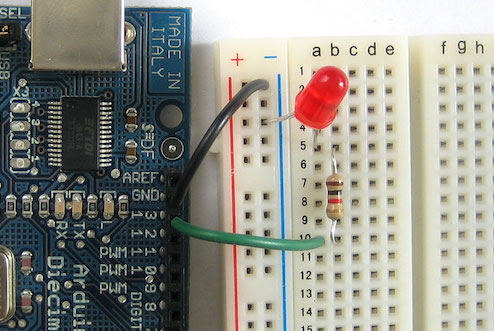
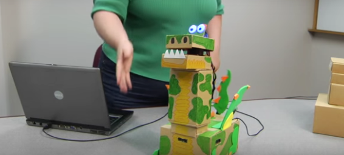

Get Hacking with Arduino!
Arduino is an open-source electronics platform based on easy-to-use hardware and software. It's intended for anyone making interactive projects. There are lots of different kinds of Arduinos, some big, some small, with different special cababilities and uses! It's a great way to introduce kids to circuits, electronics, engineering, and programming!
Welcome to the STEM and EdTech Symposium!
Michael Dreyfus-Pai |
@mdreyfus
Director of Educational Technology | Catholic Schools Diocese of Oakland

Electronics
Building things with Arduino teaches electronics foundations! Concepts like circuits, power, grounding, voltage, resistance, serial and parallel become clear with Arduino.
Programming
Arduinos run programs. Using built-in examples, novices learn to "grok" the code. By changing some values, they learn how to make the hardware change speed, color, and more.
Engineering
After they learn the basics from examples, kids can combine code and circuits to build their own electronic creations!
Awesome Arduino Projects

Getting Started
Software
Download the Arduino Software. Chromebooks can use Codebender to write and load Arduino sketches, but they may not work with our cheap Nanos.
The Arduino Nano we're using for this workshop needs a special driver. Please download, install it, and restart your computer.
The Arduino Nano (clone)

Here is a diagram of the device we're using in this workshop, a cheap clone of the Arduino Nano. They are small and great for permanent projects, but require a breadboard for prototyping. The Arduino Uno is probably the best device to learn on.
Fun Ways to Kill an Arduino!
- Change connections while powered
- Connect power (5v or 3v) directly to ground
- Connect power directly to a digital pin
- Connect a digital pin directly to another digital pin
Arduinos output electricity. Even though the amounts are safe for humans, they are enough to burn out the Arduino itself VERY QUICKLY. To keep them safe, unplug while changing connections and make sure all circuits pass through a component before returning to the Arduino.
Exercise 1: Blink
Within the Arduino software, follow the path below to open up blink.
Plug in your Arduino Nano. A red light should turn on. Set the board, processor, and port as shown below. These will be different depending on the specific Arduino you purchase.
Click the upload button to send the code to the Arduino.
That's it! If the little green light is blinking, you just programmed an Arduino! If you're having trouble connecting to the Arduino or didn't bring a compatible computer, you can try the virtual electronics lab at 123D Circuits.
Grok it!
- What does the OUTPUT in
pinMode(13,OUTPUT)mean? What would INPUT mean? - What happens if you change the number in either
delay(1000)? (hint: it's 1000 milliseconds) - Can you add more lines of
delay()andpinMode()to come up with a custom pattern?
Exercise 2: More Blink!
The next step is to wire up an LED to pin 13 and blink that. Keep it wired an use it with the fade exercise!
Grok it!
- What happens if you change the number 13 to 8 (all three times)?
- What does that number mean and how is needed to make the circuit work?
- What happens if you change to a different resistor, or bypass it entirely?
- Can you figure out how to wire another LED in parallel or series?
Breadboarding
The breadboard is an important tool in electronics. It's how everything gets connected without twisting wires or soldiering! Here's how breadboards work:
Click here for a more detailed explanation of breadboards
Exercises
The exercises below make use of Arduino's built-in examples and tutorials on Arduino.cc. I've chosen them out of a few dozen options as the most useful for illustrating key concepts.
Exercise 3: Fade
Open the Fade example by going to File --> Examples --> Basics --> Fade. The tutorial is located at https://www.arduino.cc/en/Tutorial/Fading
Grok it!
- What does
int led = 9;do? - How could you make the fade happen faster?
Exercise 4: Button
This is our first example of using an input. Open the button example by going to File --> Examples --> Digital --> Button. There's a link right in the sketch to https://www.arduino.cc/en/Tutorial/Button.
Grok it!
- Can you make this work with an external LED?
- This sketch has an OUTPUT and an INPUT. How are they different?
- What if you wanted the light to stay on for some time after pushing the button? How could you do that?
Exercise 5: Tone Melody
Super easy to wire but fun for students, this program plays a little tune. Great for getting kids into the spirit of messing with code to make different melodies.
Grok it!
- Try changing the notes in
int melodyandin noteDurationsto make different tunes. - What happens when you hit the reset button on the Arduino?
Exercise 6: Servo
A servo is a special type of motor. They can be used to move all kinds of things in a robotics project. Open the servo example by going to File --> Examples --> Servo --> Sweep. Use the link in the sketch to the tutorial. Hint: on our servos, brown is ground, red is power, and orange is control.
Grok it!
- Which part of the code is changing the position?
- How could you make the sweep move faster?
- What does
#include Servo.hdo?
Exercise 6: Switch Case
This is good for learning how the Serial Monitor can interact between your computer and Arduino. Try it out by opening File --> Examples --> Control --> switchCase and using the tutorial link in the sketch.
Exercise 7: RGB LED
There's a whole world of Arduino tutorials outside of Arduino.cc! This tutorial from Sparkfun shows you how to make a multi-color (red, green, blue) LED dance. It will walk you through the setup, provide the code, and explain a little bit, too.
Robot Petting Zoo: your first "engineering" project
The folks behind the Hummingbird Robotics kit came up with an amazing, scaffoldable first robotics project. By combining some very simple arduino skills with cardboard, glue, and color, you can build simple robots that light up, move, make noise, and respond to their environment.
This is a great way to get students going beyond copying someone else's project. As you can see, just building examples is a great learning experience, but it doesn't take a lot of creative thinking. Constructing a simple robot lets students use bits and pieces from examples to create something new, and totally theirs!
Scaffolding
When building these robots, it's best to use an order that lets students add components as they go. That way, every robot is finished, some just have more features than others.
- Get students to start by thinking about the movement. Setting up the servo is the hardest part, and will inform the shape the most.
- Construct the body using cardboard, markers, construction paper, and hot glue. Teach kids to use the glue gun safely! Hot glue is best because nothing else dries as quickly with enough structural strength.
- Add lights: Lights are easy to place anywhere as eyes, flames, sparkles, etc.
- Add sound: The Hummingbird can play WAV files, but any Arduino can play tones to make noise.
- Add inputs: add a photocell, rangefinder, Passive Infrared Sensor (PIR), or button to activate your outputs.
Hummingbird Kit
If you can get the funding, I highly recommend the Hummingbird kit. Not only does it add the ability to play audio and program using a visual, block-based language, but it also has integrated screw-in terminals to make connecting components simple and secure.
Resources
Here are some places where you can find amazing Arduinos, components, and tutorials!
| Arduino.cc | Home of the Arduino project |
| Instructables | Crowd sourced tutorials from users around the world |
| Sparkfun | Producers of awesome hardware and lessons |
| Adafruit | A great vendor with excellent tutorials |
| Reddit Arduino Sub | Community of makers sharing their projects, asking, and answering questions |
| Hummingbird | Creators of the Hummingbird Arduino, Snap visual programming language for Arduino, and the Robot Petting Zoo project |
| Makey Makey | The Arduino-based controller. Build custom controls for games and projects, even without programming. |
| Make Magazine | Cool project ideas and fun kits to build with |
| RobotLinking Kit | Wonderful, cheap kit with enough components to keep you busy for years |
| 123D Circuits from Autodesk | Diagram and prototype circuits online for free! Test your Arduino designs before building, or use as a virtual lab when you're short on parts. |
| Alternative Arduino Interfaces | The Arduino app isn't the only way to program and upload code to your device. Codebender is web-based and runs on Chromebooks, ArduBlock adds drag-and-drop programming, and Modkit is a kid-friendly visual interface. |
| Today's Parts List | |
|
|